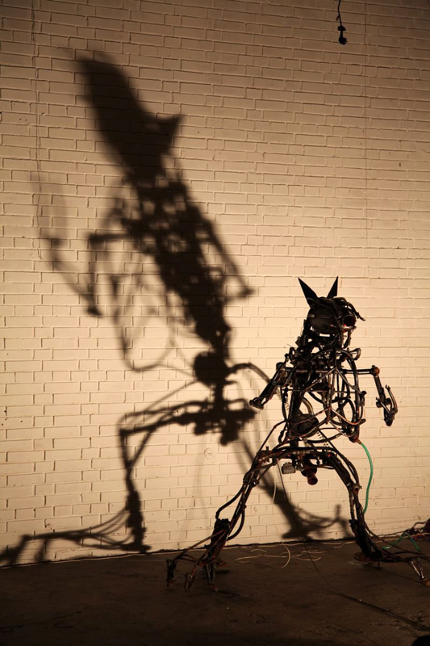
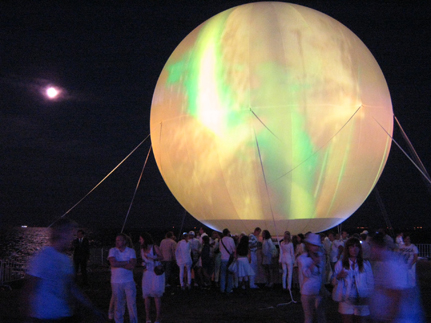
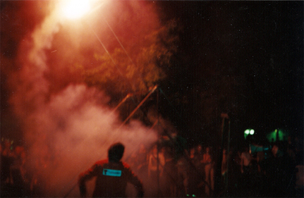
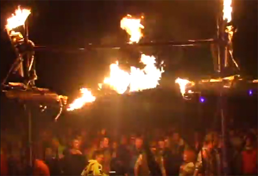
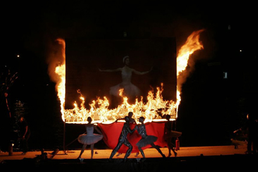
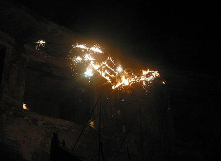
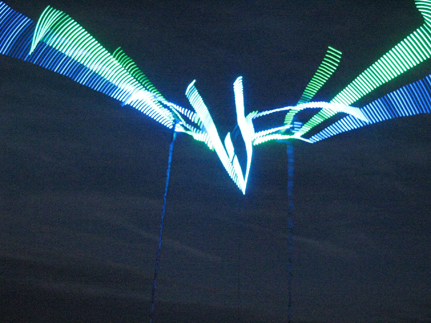
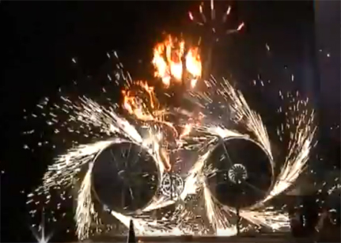

Мистерия Алектриомантия 2017
the MYSTERY of the ALECTRYOMANCY 2017
αλεκτορομαντεία
Алектриоманти́я (др.-греч. ἀλεκτορομαντεία) — петушиное прорицание
Огненный перформанс, механические скульптуры, акробатические трюки, видеопроекции на гигантские воздухоопорные декорации, выступление огнеглотателей и жонглёров, оригинальное музыкальное сопровождение, маскарад, вовлечение зрителей в танец-хоровод. Продолжительность перформанса – около 30 мин. 5 человек на открытой площадке.
Fiery performance, mechanical sculptures, acrobatic stunts, video projections on giant inflatable decorations, fire-juggling & flame-eating, original music, masquerade, engaging the audience in the concentric dance. Total duration of the performance is about 30 min. 5 people on the outdoor stage.
- Чествование Красного Петуха. Видеоконтент на Шаре, воздухоопорной конструкции диаметром 12 метров, внутреннее световое проецирование пантомимы а-ля театр теней. Хоровод участников с огнями. Лёгкая огнемётная поддержка. 5-6 мин.
Honoring The Red Rooster. Video-content projection on the 12- metres diameter inflatable sphere, outcoming light projecting pantomime a-la theatre of shadows. Concentric dance of persons with fire. Light firethrowing support. 5-6 min. - Явление Огненного Петуха. Пиротехническая кинетическая скульптура машет пылающими крыльями. Размах крыльев ~ 6 метров, высота конструкции 5 метров. Работает огненный орган, 4 сопла. Высота свечей 4 метра. Видеопроекция на Шаре. 5-6 мин.
The Phenomenon Of The Fiery Cock. Pyrotechnic kinetic sculpture waving flaming wings. The wingspan is 6 meters, 5 meters in height. The Fire Organ is working by 4 nozzles. Candles height- 4 meter. Video-projection on a sphere. 5-6 min.
- Сгорание Огненного Петуха. Танец факиров, жонглёров и робота перед проекционным экраном. Огненные герои уничтожают беснующуюся механическую Крысу. Сольные выходы. Видеоконтент проецируется на экран форматом 3м х 4м, изготовленный из негорючего полотна. В процессе перформанса экран сгорает, будучи пропитанным топливом фитилём. 5-6 мин.
Burning of the Fiery Cock. Dance of the fakirs, jugglers and the Rat in front of a projection screen. Fire heroes destroy the jumping violent mechanical robot-rat. Solo outputs. The video is projected onto the screen format of the 3 m x 4 m, made of fireproof fabric. During the performance the screen burn by being soaked with fuel spike. 5-6 min. - Возрождение Красного Петуха. Артист вращается на пылающих качелях. Высота конструкции 8 метров. Акробатический, пиротехнический трюк. Видеопроекция на Шаре. Массовка файерщиков. 5-6 мин.
The Revival Of The Red Rooster. Artist rotates on a blazing swing. Construction height- 8 meters. Acrobatic, pyrotechnic stunt. Video projection on a sphere. Concentric dance of jugglers with fire around the swing. 5-6 min. - Ликование Красного Петуха. Работают все элементы перформанса. Хоровод со зрителями. Фейерверк. Продолжительность 5-6 мин.
Glee The Red Rooster. All elements of the performance are on. Dance with the audience. Fireworks. 5-6 min.
Пирамида-чилаут. Рядом со сценической площадкой устанавливается воздухоопорная отапливаемая конструкция Пирамида диаметром 7 метров, высотой 7 метров с ковролиновым полом и сидениями-подушками. В пирамиде играет DJ, демонстрируется видеоконтент, происходят чайные церемонии, мастерклассы и семинары, работает магазин или бар. Подле пирамиды периодически срабатывают элементы перформанса: происходят трюки, аттракционы и выступления. Время действия не ограничено.
+++
The Rat, mechanical sculpture.


The Blazing Swing.

The Fire Organ.

The Burning Screen at Swan Lake:

Pyrotechnic kinetic sculpture waving flaming wings.


Mechanical sculptures & hand fire-throwers at Pinocchio: 
Пирамида-Чилаут. Рядом со сценической площадкой устанавливается воздухоопотная отапливаемая конструкция Пирамида диаметром 7 мертов, высотой 7 метров с ковролиновым полом и сидениями-подушками. В пирамиде играет DJ, демонстрируется видеоконтент, происходят чайные церемонии, мастерклассы и семинары, работает магазин или бар.. Подле пирамиды периодически срабатывают элементы перформанса: порисходят трюки, аттракционы и выступления. Время действия неограничено.
Pyramid Chill-Out Area. Next to the scenic place is set inflatable heated Pyramid 7m diameter, 7m height, with soft floor and seating-cushions. In the pyramid: DJ-sets, video projections, tea ceremonies, master classes and workshops, runs a shop or bar. .. Near the pyramid periodically trigger elements of performance: stunts, rides and shows. The duration is unlimited.